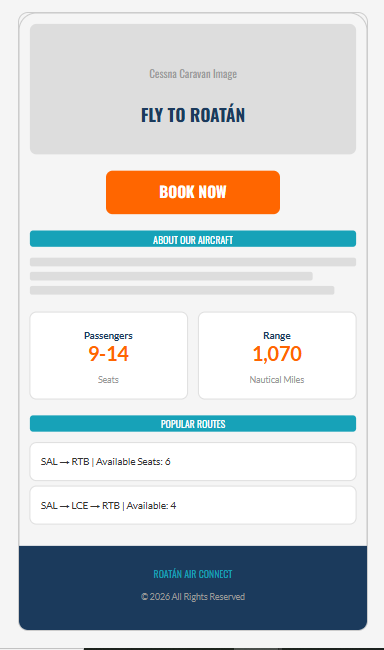
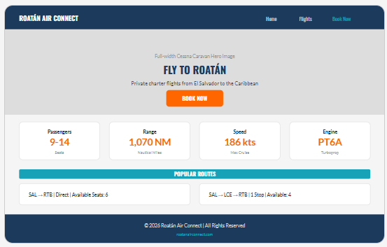

Website Planning Document
This name was chosen because it directly communicates the core service: connecting travelers to the island of Roatán, Honduras, via private charter flights. The word "Connect" emphasizes the bridge between El Salvador and Honduras, highlighting the convenience of direct and strategic flight routes aboard a Cessna Grand Caravan.
Optional domain: roatanairconnect.com
Roatán Air Connect provides a specialized charter flight booking platform for a single Cessna Grand Caravan operating between El Salvador and Roatán, Honduras. The site enables travelers to view available flights, understand the aircraft's specifications, and book seats online. A key feature is the dynamic route optimization system that calculates strategic stopovers (e.g., La Ceiba or San Pedro Sula) to maximize aircraft occupancy when flights are not at full capacity, reducing costs for passengers and increasing efficiency for the operator.
The color palette is inspired by the Caribbean destination of Roatán and the aviation industry. Navy blue conveys trust and aeronautical authority, Caribbean turquoise represents the destination, and safety orange is used for high-visibility call-to-action buttons — a color commonly used in aviation.
Two complementary Google Fonts were selected. Oswald is a condensed font that evokes airport signage and departure boards, while Lato provides clean readability for flight information and schedules.
Headings Font: Oswald (Bold 700, Medium 500)
Fly to Roatán — Charter Flights Made Simple
Used for: page titles, section headings, navigation links, and the logo. Its condensed style recalls airport terminal displays.
Body Font: Lato (Regular 400, Bold 700)
Experience the convenience of private charter flights aboard our Cessna Grand Caravan. Book your seat today and connect to the Caribbean paradise of Roatán with flexible routes and competitive pricing.
Used for: body text, descriptions, form labels, flight schedules, and footer content. Clean and legible for displaying timetable information.
Below are the wireframe layouts for the home page in both mobile and desktop views. These represent the content structure and layout relationships.


The website consists of three pages:
Hero image of the Cessna Grand Caravan, aircraft specifications (passengers, range, speed, engine), value proposition of private charter flights, and a prominent "Book Now" call-to-action.
Dynamic page using JavaScript arrays and objects to display available flight routes. Calculates seat availability and shows strategic stopovers (La Ceiba, San Pedro Sula) to optimize occupancy.
HTML form for seat reservations with input validation. Stores booking data in localStorage and displays a personalized confirmation message upon submission.